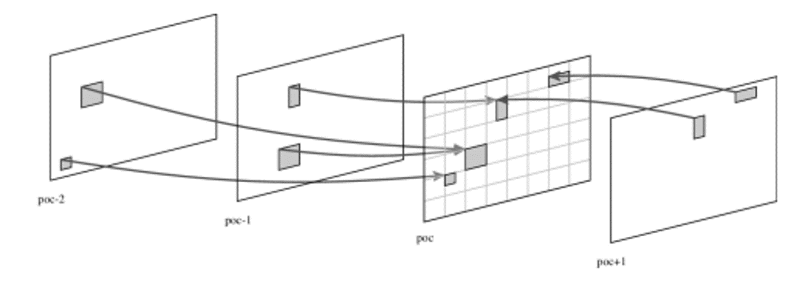
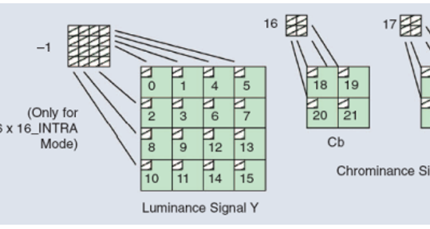
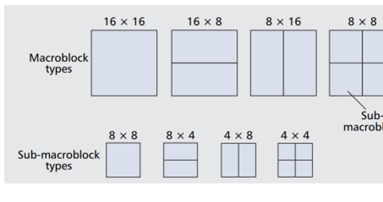
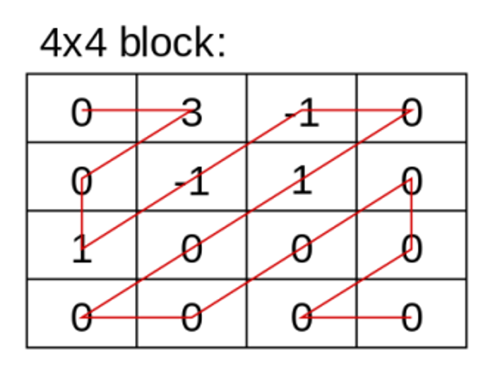
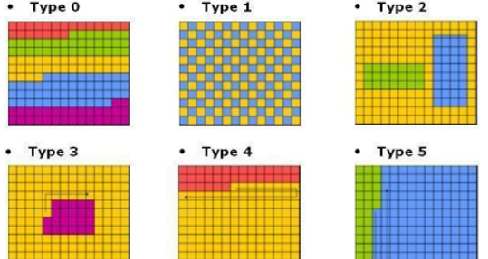
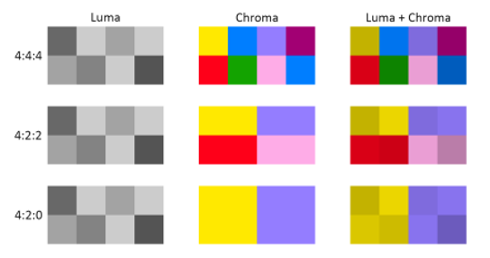

H.264 o MPEG-4 AVC (Advanced Video Coding) es un formato de codificación de vídeo para grabar y distribuir señales de vídeo FullHD y audio. Fue desarrollado y mantenido por el ITU-T Video Coding Experts Group (VCEG) con el ISO/IEC JTC1 Moving Picture Experts Group (MPEG).
Sus características principales están enfocadas a las mejoras en la eficiencia de codificación y a la flexibilidad para su uso en diversas aplicaciones.
Predicción inter-imagen con soporte para múltiples imágenes.
Predicción espacial desde los bordes de los macrobloques vecinos, incluyendo varios tamaños.
El uso de una aproximación de la DCT que utiliza coeficientes enteros.
Características de codificación de macrobloques sin pérdidas.
Un diseño de codificación de entropía que utiliza las variantes adaptables al contexto de los algoritmos de codificación aritmética binaria y de codificación de longitud variable (CABAC y CAVLC).
Resiliencia a pérdidas.
Soporte para muestreo cromático monocromo y 4:2:0, 4:2:2 y 4:4:4, según el perfil de codificación usado.
La expansión FRExt, además de las previamente mencionadas, soporta las siguientes herramientas:
Transformación de colores residuales, para codificación RGB eficiente sin pérdidas de conversión o expansión de bits.
Cuantización escalar.
Matrices de escalado de cuantización perceptualmente ponderadas, específicas del codificador.
1998
El estándar H.264/AVC fue desarrollado a lo largo de 4 años, originalmente como el proyecto H.26L del VCEG en 1998.
2003
Luego como parte de MPEG-4 parte 2, con el trabajo del comité conjunto JVT. Fue concluido en 2003.
Este estándar es conocido por seis nombres diferentes, aunque AVC y H.264 son los más comunes.
(Edición 1, Mayo de 2003) primera versión de H264, con los perfiles base, principal y extendido.
(Edición 2, Marzo de 2005) introdujo los Fidelity Range Extensions (FRExt), además del perfil High y sus variantes.
(Edición 2.2, Junio de 2006) eliminación del perfil High 4.4
(Edición 2.3, Abril de 2007) inclusión del perfil High 4.4 predictivo y otros cuatro perfiles con solo predicción intra.
(Edición 3, Noviembre de 2007) Scalable Video Coding añadido, con 3 perfiles SVC.
(Edición 3.1, Enero de 2009) correcciones menores.
(Edición 4, Marzo de 2009) nuevo perfil, con un subconjunto de características comunes.
(Edición 4, Marzo de 2009) extensión Multiview Video Coding con su perfil respectivo.
(Edición 5, Marzo de 2010) nuevo perfil MVC y un mensaje de información suplementaria para mejora (SEI).
(Edición 6, Junio de 2011) nuevo nivel 5.2 y el Progressive High Profile.
(Edición 7, Enero de 2012) tres nuevos perfiles orientados a la comunicación en tiempo real.
(Edición 8, Abril de 2013) especificación de codificación para información de mapas de profundidad para videos 3D estereoscópicos, con un nuevo perfil.
(Edición 8, Abril de 2013) corrección de error en el proceso de extracción de sub-bitstreams.
(Edición 8, Abril de 2013) indicadores adicionales para el espacio de color.
(Edición 9, Febrero de 2014) especificación del Enhanced Multiview Depth High Profile.
(Edición 9, Febrero de 2014) especificación de las mejoras compatibles con cuadros con múltiples resoluciones (MFC).
(Edición 10, Febrero de 2016) especificación de video estereoscópico MFC.
(Edición 11, Octubre de 2016) especificación de niveles de decodificación adicionales para soportar imágenes más grandes, más mensajes SEI e identificadores para puntos de códigos VUI.
(Edición 12, Abril de 2017) especificación del perfil Progressive High 10, HLG y más códigos VUI y mensajes SEI.
(Edición 13, Junio de 2019) introducción de gran cantidad de mensajes y metadatos SEI.
(Edición 14, Agosto de 2021) más mensajes SEI, así como correcciones y clarificaciones menores.
El estándar H.264/AVC especifica el formato de la información codificada y el proceso de decodificación de la información, pero no determina un algoritmo de codificación específico.
El diseño y la implementación de codificadores H.264/AVC fue simplificada, gracias a varias de las características mencionadas anteriormente.
La capa de codificación de video de h264 utiliza una combinación de predicción temporal y espacial basada en bloques, junto con codificación por transformación basada en bloques.
Predicción
Antes de realizar la predicción de una imagen dada, H.264/AVC subdivide cada imagen en unidades conocidas como “macrobloques”, soportando 4 particiones diferentes (16x16, 16x8, 8x16 y 8x8).
Estos bloques pueden ser divididos aún más en “sub-macrobloques”, con tamaños de 8x8, 4x8, 8x4 o 4x4.
El estándar H.264/AVC utiliza dos métodos de predicción, aplicados a cada imagen:
Espacial
Espacial, o “Intra-predicción”: se predicen los componentes luma y croma de cada macrobloque de una imagen, usando las muestras vecinas ya codificadas.
Temporal
Temporal, o “Inter-predicción”: se predicen los macrobloques de una imagen con base en la imagen anterior, o en la imagen anterior y posterior.
Transformación
Un bloque de muestras residuales, producidas por el proceso de predicción, es transformado utilizando una aproximación entera de la DCT.
El resultado de la DCT es cuantizado, usando un parámetro de cuantización. Mientras mayor sea el grado de cuantización, mayor será la compresión y menor será la calidad, debido a la pérdida de información.
Codificación
La codificación incluye todos los valores resultantes de la codificación de video, además de información extra para permitir al decodificador recrear una predicción, información sobre los datos comprimidos y las herramientas de codificación usadas, además de información sobre la secuencia de video completa.